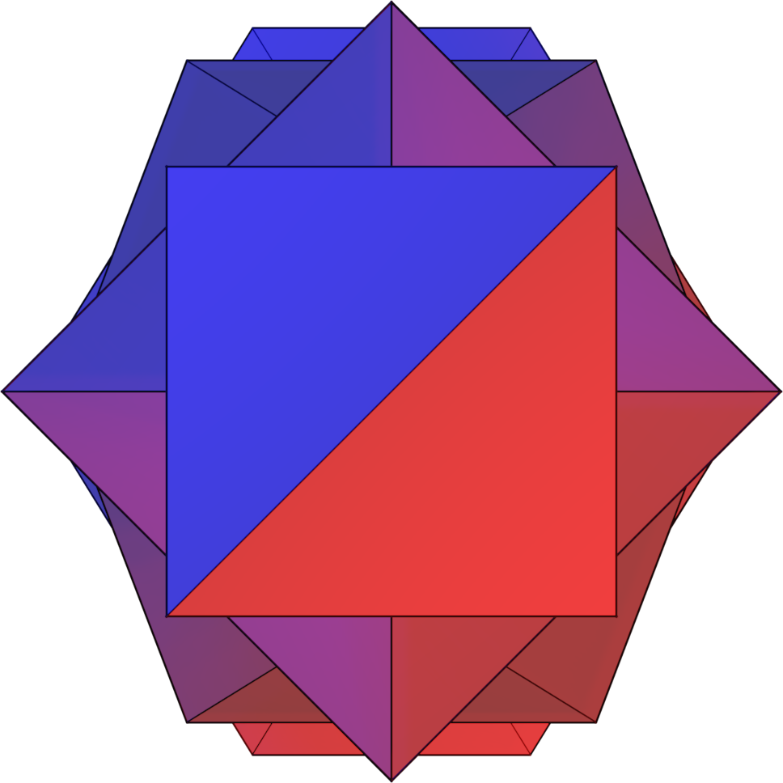

INTRODUCTION
A study of information theory deepens and enriches understanding of a broad variety of technical fields - from obvious applications in computer science such as data compression and encryption, to statistics and machine learning, to fundamental theories of physics.
A broadly applicable subject located at the intersection of a diverse set of technical disciplines has resulted in the use of some arguably esoteric mathematical notation which may be difficult to understand for newcomers. While a rich subject building upon different branches of mathematics does require some liberty in notation, this text develops information theoretic structures using a style of notation accessible and appropriately robust.
Familiarity with basic concepts and structures of real analysis is recommended prerequisite material; set-builder notation is frequently used for discrete cases, and integrals and derivatives for continuous.
As data compression is one of the core applications of information theory, emphasis is placed on developing definitions in a compact style. Mathematical logic symbols are frequently used; however, this is not an exercise in axiomatically describing structures in number theory or a rigorous formulation of mathematical logic. Rather, consider these foundations upon which this analysis of information theory is built.
Principles of Mathematical Analysis, 3rd Edition. Walter Rudin. McGraw Hill. ISBN10: 007054235X, ISBN13: 9780070542358. Published 1976.
‹ LICENSE NOTATION ›
Joseph Shaw
